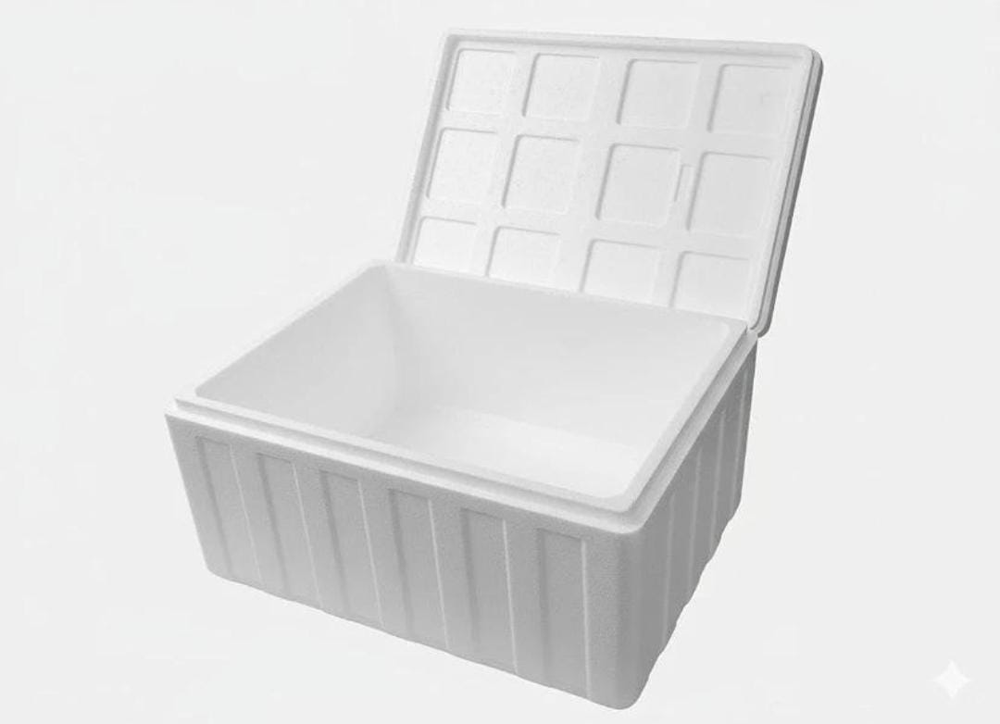

Thermocol Ice Box Supplier in Bengaluru

Insulated Thermocol Ice Boxes
Shinde Packaging Products supplies thermocol ice boxes designed for insulated packaging and transportation. Their lightweight construction and insulating properties help reduce heat transfer and support temperature-sensitive product handling.
Applications of Thermocol Ice Boxes
- Food and seafood transportation
- Fish and meat packaging
- Temperature-sensitive product handling
- Cold-chain packaging applications
- Storage and transportation of chilled products
Why Choose Shinde Packaging Products?
- Packaging material supplier in Bengaluru
- Multiple packaging product options
- Bulk supply options
- Enquiry and quotation assistance
Contact Us for Thermocol Ice Boxes
Shinde Packaging Products
Bengaluru, Karnataka, India
Phone: +91 6361177533
Phone: +91 9449889992
Frequently Asked Questions About Thermocol Ice Boxes
1. What are thermocol ice boxes used for?
Thermocol ice boxes are used for insulated packaging and transportation of food, seafood and other temperature-sensitive products.
2. Are thermocol ice boxes suitable for seafood packaging?
Yes. They are commonly used for packing and transporting fish and seafood because their insulating properties help reduce heat transfer.
3. Where can I buy thermocol ice boxes in Bengaluru?
Contact Shinde Packaging Products in Bengaluru for thermocol ice box enquiries, pricing and bulk orders.